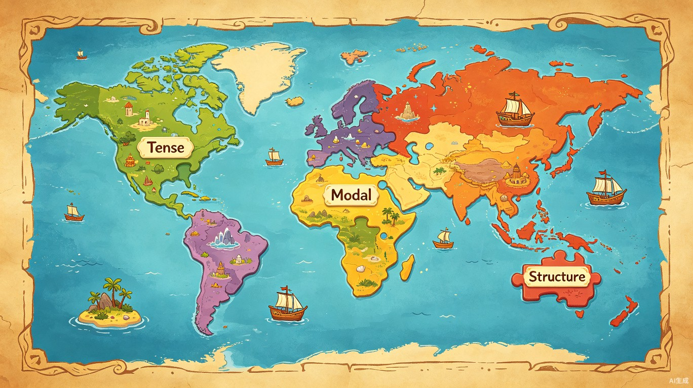

产品形态：网站 / Web 应用 — 基于浏览器访问，采用闯关式游戏化设计，将每个语法点呈现为地图上可探索、可攻克的地点。
一句话描述：「语法大陆」是一款英语语法知识的「全景导航地图」——它不教语法本身，而是把散落在校内教纲和 KET、PET、雅思等考试中的全部语法点，以一张可交互的大陆地图呈现出来，让学生和家长一眼看清「要学什么、学到了哪里、还剩哪些没学」。
6 大语法大陆（时态岛、情态高地、词法大陆、句法大陆、动词搭配大陆、语篇半岛），260+ 个知识点以拼图形式组成大陆版图。学生和家长可以直观看到全部语法点的全貌和归属关系——「原来英语语法长这样」。
每个知识点支持标记「已掌握」，地图上以绿色对勾直观显示。侧边栏进度条实时统计已征服/总数，学生和家长无需猜测，打开地图就知道当前处于什么阶段、还差多少。
选择 KET、PET、FCE 或 IELTS 考试级别后，地图自动高亮该级别对应的语法点，灰色隐藏无关内容。学生可以精准聚焦当前考试需要覆盖的范围，不做无用功。
作为学生的家长，在孩子备考各类英语考试时，我深切体会到语法学习的碎片化困境——课本讲一点、练习册补一点、老师提一点，却始终无法形成完整的语法知识体系。
我受到「奇幻冒险地图」的启发：如果将英语语法的完整体系想象成一片由多个大陆组成的世界，每个语法类别是一个大陆，每个知识点是大陆上的一块领土，那么学习语法就变成了一场「探索与征服」的冒险。希望借助这种游戏化的方式，让语法学习变得有路径、有目标、有成就感——既让孩子有动力和目标，也让家长有清晰的脉络。
英语语法知识点散落在不同教材、教辅和考试大纲中，学生除了依赖老师的经验外，没有一个清晰的语法学习脉络。市面上教语法的教材已经很多，但缺的是一张「全景导航图」——让学生和家长一眼看清：全部语法点有哪些、它们之间的关联是什么、当前学到了哪里、离目标考试还差多少。
具体表现为：
• 体系碎片化 — 课本、练习册、老师各讲各的，始终拼不出完整的语法知识地图
• 进度不可见 — 学了三年英语，却说不清自己掌握了哪些语法点、还缺哪些
• 考试对标难 — KET、PET、雅思分别考哪些语法？没有一个直观的对照表
• 家长无感知 — 花了钱报了班，但无法衡量孩子的语法学习是否系统、有无遗漏
判断：市面上教英语语法的教材、题库、视频课程已经非常丰富，深度教学不是我们的目标。真正缺失的是一张「语法全景导航图」——一个让学生和家长能一眼看清语法全貌、标记学习进度、对标考试范围的可视化工具。
取舍：我们选择只做「脉络展示 + 进度标记」，不做深度语法教学。语法大陆定位为教材的「导航伴侣」而非替代品：学生跟着课本或老师学语法，用语法大陆来导航和追踪进度。基于 EGP（English Grammar Profile）和 CEFR 标准进行知识点分类，确保覆盖的准确性和权威性。
技术选型：使用 React + SVG + Motion 动画库构建前端，利用程序化生成算法（Procedural Generation）创建有机的大陆形状和拼图式知识点布局。后端使用 Express + Gemini API 提供 AI 辅导能力。
技术架构：
• 前端：React + TypeScript + Tailwind CSS + Motion（动画）+ SVG（地图渲染）
• 后端：Express.js + Gemini API（AI 导师功能）
• 构建：Vite + esbuild
• 数据持久化：Cookie / localStorage（学习进度）
项目仓库：语法大陆_Trae 文件夹内包含完整源码
以下展示了使用 TRAE 完成「语法大陆」Demo 开发的完整流程，每一步都对应一段真实的 TRAE 对话。
地图绘制：预期 vs 现实
最初用 GPT 生成的预期效果图非常精美——大陆形状有机自然，知识点拼图错落有致。但实际开发时发现，让程序「按照数据数量自动绘制出好看的地图」远比想象中困难。尝试了用文字描述、SVG 路径指令等多种方式引导 TRAE 生成，效果都和预期差距很大。
最终的解决方案是：给地图加了一个「顶点编辑模式」——可以直接在界面上拖拽每个大陆的顶点来调整形状，像捏橡皮泥一样一点点调整，才终于调出了稍微像样的布局。这个功能本来是调试用的，最后成了达到预期效果的核心手段。地图自动布局算法至今仍是最大的技术难点，后面还想继续优化。
当前版本是 MVP 原型，还有很多细节需要打磨：
• 账号系统：目前只用浏览器缓存记录进度，真实场景下需要学生账号，可以记录身份、同步多设备进度，家长端也能查看孩子的学习情况。
• 测试题质量：现在的测试题偏简单，和"点一下打卡"差不多，后续需要提升题目深度和区分度，让"征服领地"更有成就感。
• 交互引导：新用户打开地图可能不知道从哪开始，需要加强顺序引导——比如"推荐从这里开始"的高亮提示、学习路径的箭头引导。
• 细节逻辑：已经测试通过的地块现在还可以重复测试，缺少"已通关"的状态区分；前置依赖的解锁逻辑也需要进一步打磨。
以下 Session ID 均来自 TRAE 对话记录（双击 TRAE 对话列表中的对话项即可复制），分别对应开发链路中的三个关键阶段。
如何验证：在 TRAE 中找到对应日期（7 月 7 日、7 月 9 日、7 月 14–15 日）的对话记录，双击对话列表项即可看到完整的 Session ID 和对话内容，涵盖从数据处理 → 地图构建 → 交互优化 → 报名撰写的全链路。
待填写：请在提交后附上社区报名帖的公开链接。
（报名帖需在 TRAE 社区论坛发布，发布后在此处补充链接即可。）